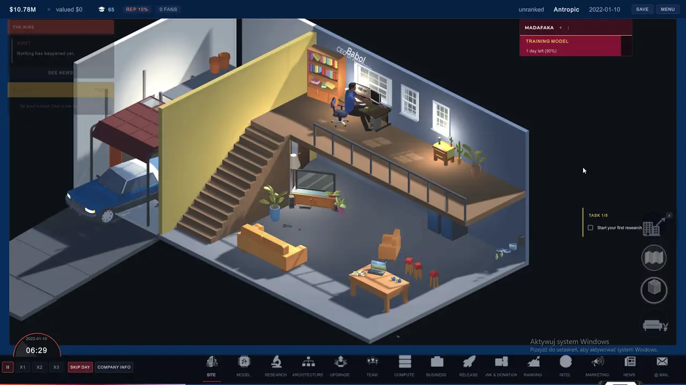
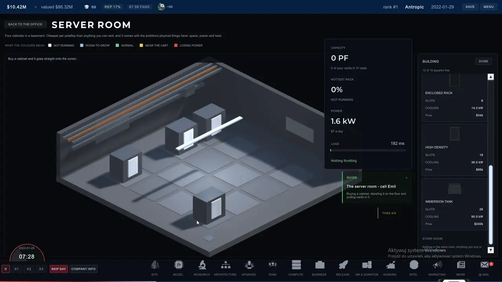
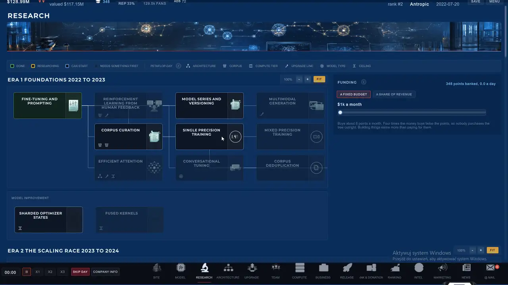
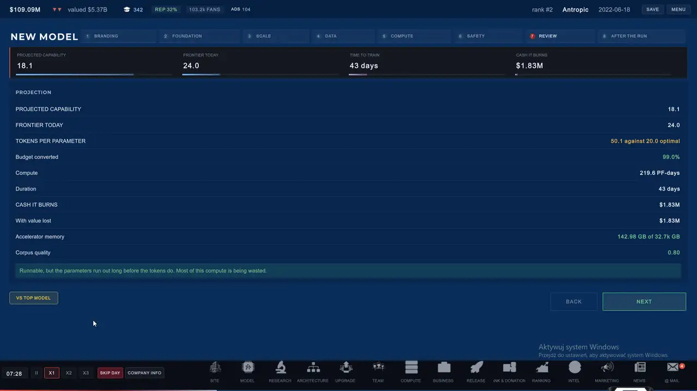
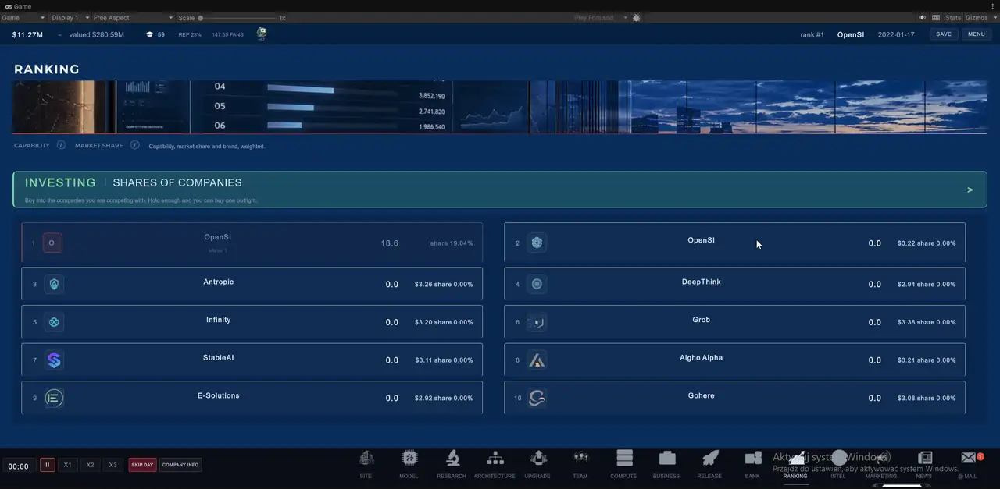
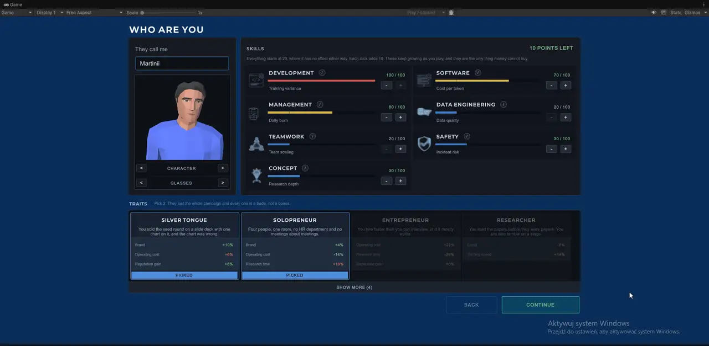
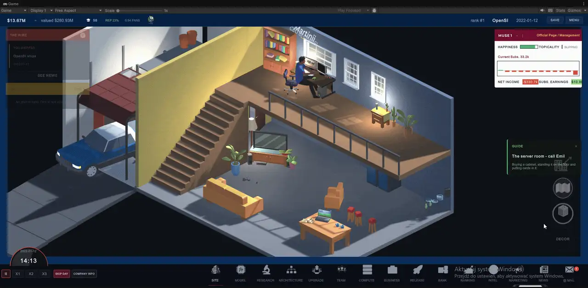
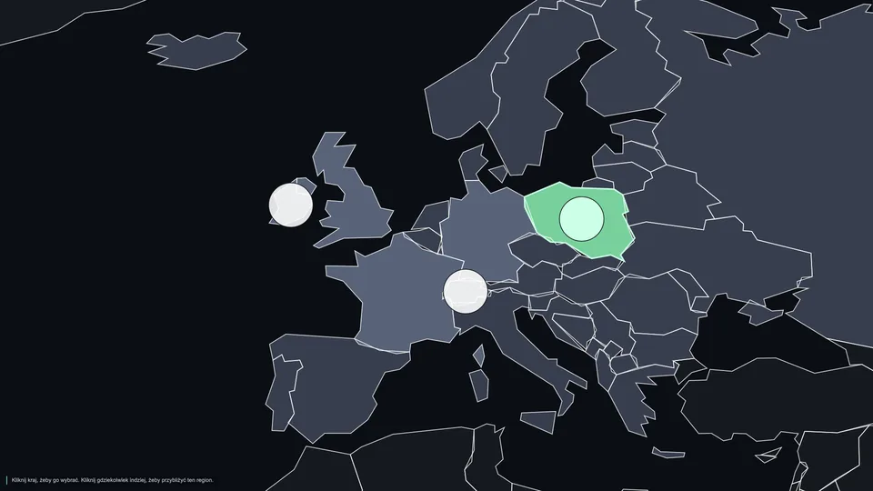

7 > 8W 0.4.0
Siedem kart bije osiem
Zapełnij szafę, a ciepło zdławi całą. Zamień jedną kartę na wentylator i ta sama szafa da więcej.
Styczeń 2022. Dwanaście milionów dolarów. Zero produktu. Trenuj modele, finansuj badania i wykładaj prawdziwe pieniądze na moc obliczeniową, kiedy front przesuwa się niezależnie od tego, czy jesteś gotowy. Kosztowna decyzja rzadko dotyczy tego, co kupić. Dotyczy tego, kiedy.

Wersja w skrócie. Wszystko z oznaczeniem 0.4.0 jest dziś w darmowym pobraniu. Następny build jest gotowy i czeka na wydanie. W planach znaczy dokładnie to.
Zapełnij szafę, a ciepło zdławi całą. Zamień jedną kartę na wentylator i ta sama szafa da więcej.
OpenSI, Antropic, DeepThink, Grob i dziesięć innych, zasianych z prawdziwej osi wydań 2022-2026, a potem wolnych, by pójść własną drogą.
Jakość modelu liczy strata Chinchilli. Optimum to około dwudziestu tokenów na parametr, a dziesięć razy więcej mocy daje około dziesięciu punktów.
Cena akcji wynika z możliwości laboratorium w danym dniu. Z większością udziałów możesz przejąć całą firmę.
Zapłać za historie o rywalu, pozwij go, podkup mu ludzi. Wpadka kosztuje więcej, niż daje sukces.
Poważny incydent otwiera kontrolę. Werdykt zapada według zabezpieczeń, z którymi model wyszedł.
Państwowa pożyczka na moc obliczeniową kosztuje około 2,9 razy tyle, ile pożycza. Póki ją spłacasz, nikt nie może kupić firmy.
Ćwierć użytkowników bierze aktualizację pierwszego dnia. Reszta przechodzi powoli, a jeśli nowa wersja jest gorsza, wcale.
Raz z kalendarzem, drugi raz, gdy wychodzi następca. Kup rok za wcześnie, a kapitał utknie we flocie, którą rynek już minął.
Dwadzieścia trzy wydarzenia ze świata przychodzą w dniach, w których naprawdę się stały, do ciebie i do każdego rywala.
Płatny wywiad ostrzega przed premierami i spadkami cen. Tańsze biuro brzmi pewniej, niż na to zasługuje.
Urośnij na tyle, a ktoś zaproponuje kupno firmy. Kupiec, który jest w tyle, płaci więcej.
Emil prowadzi przez pierwszą godzinę, płaci za pierwsze badanie i ma na tablicy własne małe laboratorium.
Język zmienisz w każdej chwili. Osiągnięcia zostają z tobą między kampaniami, także po bankructwie.
Bayview: domy, centrum, port i dolina, a na mapie biura do wynajęcia, które można znaleźć i kliknąć.
Każda szafa grzeje jedno pomieszczenie. Klimatyzatory zajmują podłogę, podkręcanie wymaga chłodnej sali, a każdą kartę montujesz ręcznie.
Dwa wynajmowane piętra od nowa, z prawdziwymi materiałami, recepcją i nazwą firmy nad wejściem. Pracownicy siedzą i piszą przy biurkach.
Zbadaj lepszy tokenizer, a to samo zdanie kosztuje mniej tokenów, więc cała flota obsłuży więcej ludzi.
Pakty z innymi laboratoriami i fuzje między rywalami. W planach, jeszcze w żadnym buildzie, projekt nie jest zamknięty.
Planowane na październik-listopad 2026. Do tego czasu każdy build jest za darmo na itch.io.
Sześć ujęć z 0.2.0 i 0.3.0. Każda liczba na ekranie wyszła z symulacji w dniu nagrania.






Rendery z aktualnego builda deweloperskiego. Niczego z tego nie ma jeszcze w 0.4.0.
Parodie prawdziwych laboratoriów z datowaną historią z publicznych źródeł. Trzy z nich rozpadają się w trakcie kampanii, przez te same ryzyka, które mogą skończyć twoją firmę.
Pierwszy widok firmy jest celowo skromny: biurko, łóżko, salon, garaż i tani samochód. Późniejszy rozwój ma być widoczny, a nie tylko liczbowy: większe biura, ludzie i własna infrastruktura zastępują startowy zestaw.

Scaling Laws jest zbudowane wokół decyzji, które zużywają i pieniądze, i kalendarz. Lepsza liczba jest przydatna tylko wtedy, gdy firmę stać na czas potrzebny, żeby ją osiągnąć.
Architektury, korpusy, typy modeli i infrastruktura siedzą za badaniami. Gotówka pomaga. Nie kasuje łańcuchów wymagań ani czasu w kalendarzu.
Wybierz model, skalę, dane i budżet mocy. Kreator pokazuje prognozowaną zdolność, czas treningu i gotówkę, którą przebieg ma spalić.
Skończony przebieg może poleżeć na półce. Czekanie może ominąć premierę rywala albo dać czas na ulepszenie, ale rynek nie stoi, kiedy czekasz.
Ustaw ceny, zarządzaj darmowym dostępem, buduj markę i finansuj kolejny cykl. Firma, która wypuści jeden model i osiądzie na laurach, ma z założenia zostać w tyle.
Interfejs jeszcze się zmienia. Systemy pod spodem dzielą już jedną symulację: te same zdolności, rynek, badania i stan firmy napędzają ekrany, zamiast osobnych dekoracyjnych wyników.

Etapowy kreator rozdziela fundament, skalę, dane, moc i przegląd, żeby każdy wybór miał miejsce na wytłumaczenie, co zmienił. Zdolność, czas treningu i spalana gotówka przeliczają się przy każdej zmianie projektu.

Drzewko technologii decyduje, czego firma może użyć. Pieniądze sfinansują program, ale nie odkupią miesięcy, które już minęły.

Rozłóż program badawczy między rzadkość, przepustowość, jakość, koszt serwowania i rozumowanie. Tani program w pośpiechu ma większy rozrzut wyniku, a gonienie wszystkich kierunków naraz rozwadnia głębię.

Cena, darmowy dostęp, marka i wiek modelu wpływają na popyt. Kilka modeli może być na rynku naraz, więc specjalista albo tańszy produkt może współistnieć z flagowcem.
Konkurenci są agentami, a nie statyczną tabelą wyników. Jedni odkładają premierę, gdy blisko jest lepszy krzem, inni się spieszą, gdy gracz za bardzo odjedzie, a stawka poprawia się między premierami.
Wynajem jest elastyczny i drogi. Własność bywa tańsza za FLOP, ale sprzęt się starzeje, siedzi w bilansie i zależy od tego, czy procesory, pamięć i sieć porządnie go karmią.
Wywiad ostrzeże przed premierą sprzętu, załamaniem cen, brakami w dostawach albo rywalem, który się wstrzymuje. Tańsze biuro brzmi pewniej, niż zasługuje na to jego rzeczywista trafność.

Cztery typy szaf i nie są drabinką. Więcej slotów kosztuje więcej chłodzenia, najtańsza rama opiera się na pomieszczeniu, a zbiornik immersyjny nosi własny płyn. Szafy się nie starzeją, ale układy robią się gorętsze, więc pokój zapełniony w 2023 i nietknięty od tamtej pory po cichu dławi się w 2027, a naprawa kosztuje slot.

Kursy akcji biorą się z opublikowanej zdolności każdego labu na dany dzień, więc tabela rusza się z powodów, które da się wskazać. Miej połowę firmy, a możesz negocjować resztę. Przejęcie oddaje trzy czwarte ich publiczności i ich najnowszy model, nigdy całość.

Czternaście labów z datowanymi historiami. Otwórz jeden, a zobaczysz, co o tobie myślą, kto tam pracuje i ile trzeba, żeby ich ruszyć. Każde podejście jest zapisane, niezależnie od tego, czy da się je wyśledzić.

Escape otwiera ustawienia, statystyki i cztery kampanie. Nadpisanie jednej wymaga dwóch kliknięć, bo nic nie wraca. Autozapis liczy prawdziwe minuty, a nie prędkość gry, i jest domyślnie wyłączony: gra, która zapisuje na dysk w połowie decyzji, podjęła ją za ciebie.
Cztery poziomy płatnej historii o rywalu, a każdy jest głośniejszy, droższy i łatwiejszy do wyśledzenia niż poprzedni. Wpadka kosztuje więcej, niż dałoby trafienie. Pozew działa tak samo z drugiej strony: im więcej żądasz, tym mniejsza szansa, że dostaniesz.
Kiedy firma jest już dość warta, ktoś składa ofertę kupna. Przyjęcie kończy kampanię z konkretną kwotą i jest to jedyne dobre zakończenie, jakie ta gra ma. Jest zablokowane, dopóki wisi państwowy program mocy obliczeniowej, bo rząd nie patrzy spokojnie, jak jego pieniądze sprzedaje się konkurencji.
Scaling Laws bierze opublikowane prawa skalowania i publiczne dane o sprzęcie jako punkty odniesienia, a potem robi z nich ekonomię gry. Szacunki i prognozy mają zostać oznaczone jako szacunki.
Trening optymalny obliczeniowo leży koło dwudziestu tokenów na parametr w modelu używanym przez grę. Niedotrenowanie albo przetrenowanie sprawia, że ten sam budżet mocy kupuje gorszy wynik.
Dziesięciokrotność efektywnej mocy kupuje mniej więcej dziesięć punktów zdolności na względnej skali gry. Dlatego front przesuwa się dalej, nawet gdy ostatni model gracza wydawał się drogi.
Własny sprzęt traci z czasem i drugi raz, gdy pojawiają się istotne generacje następców. Zakup za wcześnie potrafi uwięzić kapitał we flocie, którą rynek już wyprzedził.
Notatki inżynierskie i kod są jawne w repozytorium Scaling Laws.
Zrobione w wydanym buildzie. Każda liczba na tych zrzutach wyszła z symulacji, a nie z makiety.
Osiem etapów, a o wyniku decyduje głównie strona skali. Parametry przeciwko tokenom na logarytmicznym pasie, więc połowa optimum i podwójne optimum leżą w tej samej odległości od środka. Niedotrenuj albo przetrenuj, a ten sam rachunek kupi ci gorszy model.
Dom z garażem, jedno biurko na antresoli i samochód przed wejściem. Firma jest miejscem, zanim stanie się arkuszem, a założyciel chodzi do tych jej części, do których go wyślesz.
Zapełnij szafę serwerową do końca, a ciepło zdławi w niej wszystko. Zamień jeden akcelerator na wentylator, a ta sama szafa da więcej. Szafy się nie starzeją, układy robią się gorętsze, a pokój zapełniony w 2023 po cichu traci ci przepustowość do 2027.

Wydanie aktualizacji nie przenosi na nią wszystkich. Jedna czwarta bierze nową wersję pierwszego dnia. Reszta dryfuje po dwanaście procent pozostałej luki dziennie, a jeśli nowa wersja jest gorsza, nie przyjdą w ogóle.
Każdy niesie datowaną historię, którą możesz otworzyć, kurs akcji, w który możesz wejść, i listę pracowników, którym możesz złożyć ofertę. Trzy z nich rozpadają się w trakcie kampanii, na tych samych ekspozycjach, które mogą skończyć twoją firmę.
Wersja 0.4.0 z 13 września 2026 gra się od początku do końca, od zimnego otwarcia w styczniu 2022 przez kampanię, która trwa latami. To alfa i strona to mówi: część ekranów jest nadal surowa. To, co poniżej, jest w buildzie do pobrania dziś.
To są zrzuty z pracy, a nie makiety sklepowe. Układ, odstępy i grafika będą się jeszcze zmieniać, w miarę jak systemy wychodzą z prototypu.


Tak. Każdy dotychczasowy build jest za darmo na Windows na itch.io. Wydanie na Steam planowane jest na październik-listopad 2026.
Wersja 0.4.0 z 13 września 2026, alfa. Mapa miasta Bayview, przebudowane biura, klimat serwerowni i badania nad tokenizacją są gotowe na następny build.
Czternaście parodii: OpenSI, Antropic, DeepThink, Infinity, Astral, DeepSearch, zAI, Swen, Grob, StableAI, IntroduceAI, Algho Alpha, Gohere oraz E-Solutions, wymyślona firma kuzyna gracza z Radomia. Trzynaście zasianych jest z prawdziwej osi wydań 2022-2026.
Tak. Możesz kupić akcje i przejąć laboratorium większością, podkupić mu ludzi, zapłacić za oczerniające historie w czterech progach i je pozwać. Rywale też potrafią pozwać. Każdy ruch zmienia relację.
Jeszcze nie. Sojusze między laboratoriami i fuzje są w planach i nie ma ich w żadnym buildzie.
Kod jest dostępny do wglądu, ale to nie open source. Można go czytać na GitHubie, jednak od 19 września 2026 nie wolno go rozpowszechniać. Wcześniejsze wersje zostają na PolyForm Noncommercial 1.0.0.
Marcin "HCK" Firmuga, samodzielny twórca z Radomia, publikujący jako HCK Labs. Zrobił też PC Workman, monitor dla Windows w Microsoft Store.
Scaling Laws buduje otwarcie Marcin "HCK" Firmuga pod szyldem HCK Labs. Kod, notatki inżynierskie i historia pracy zostają widoczne, kiedy gra się zmienia.